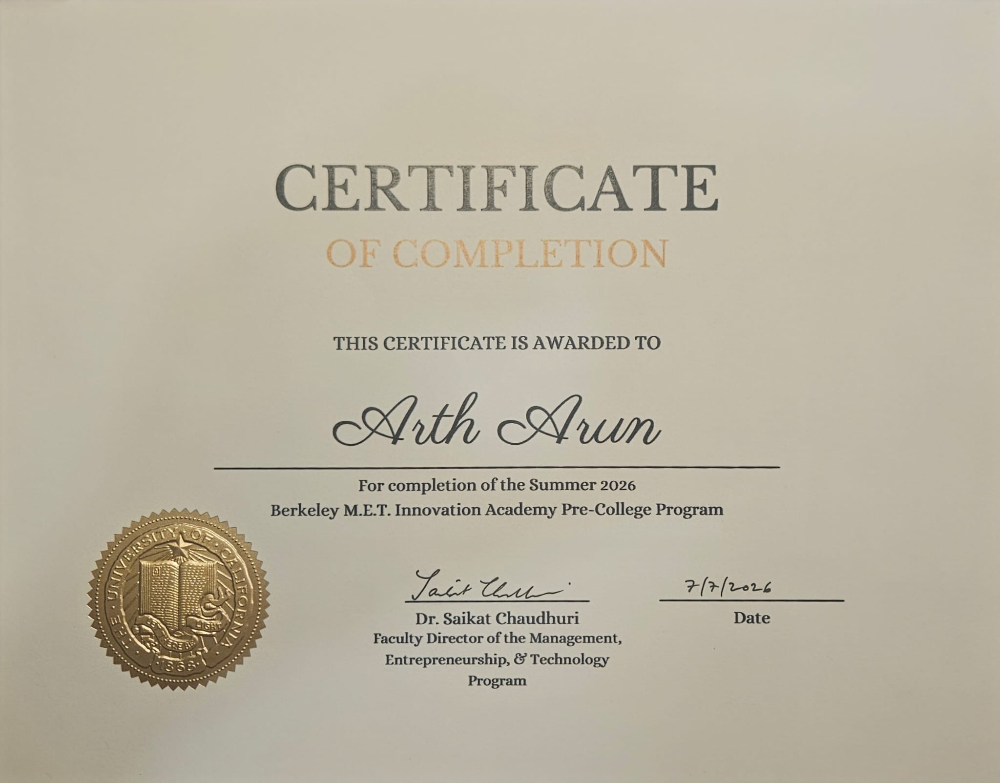
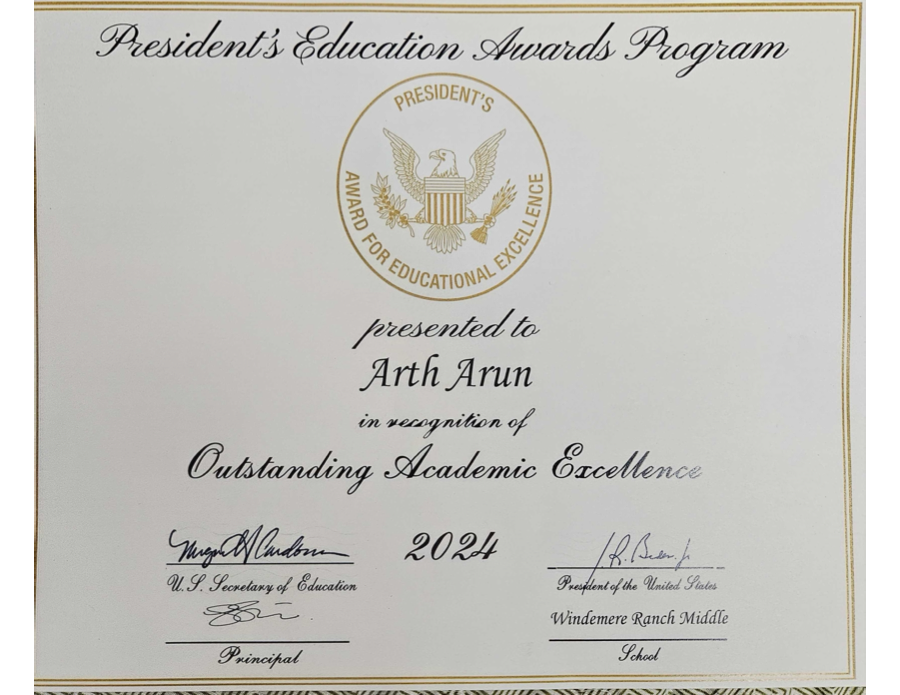
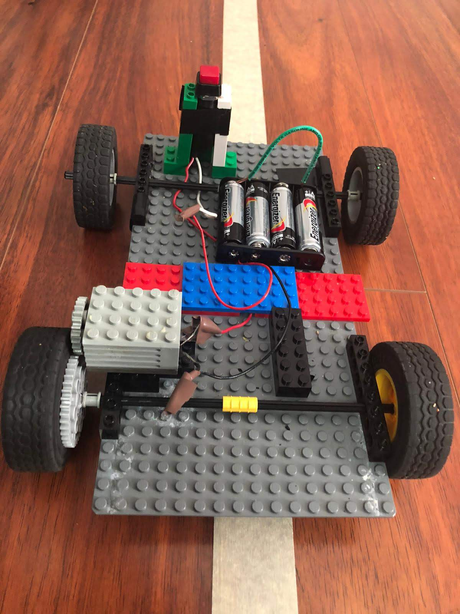
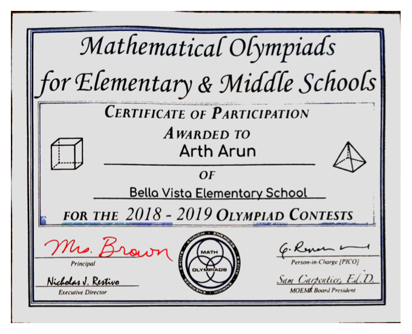
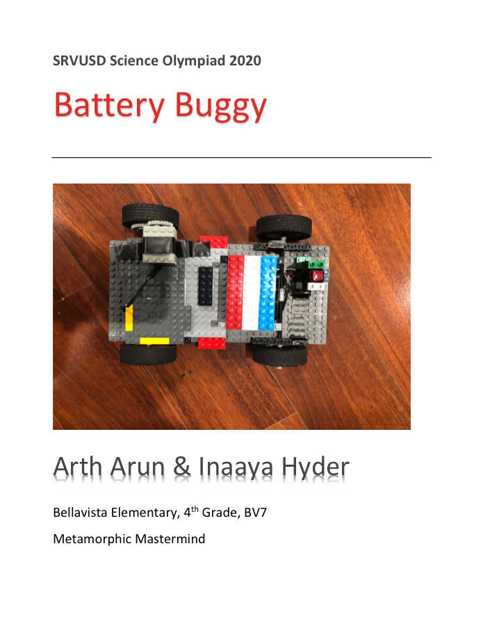
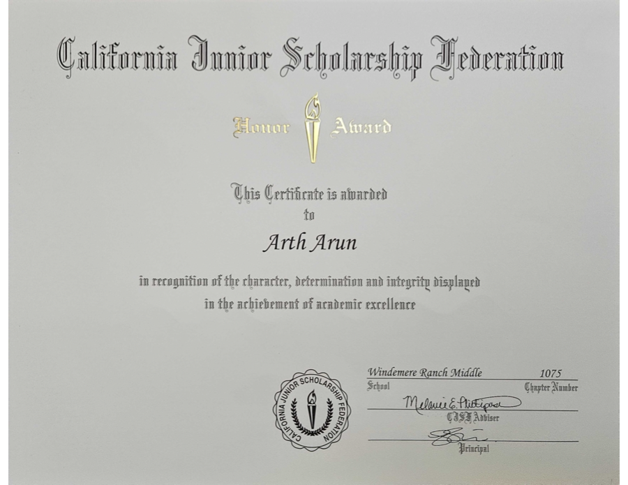

Academics
At Dougherty Valley High School, Arth pairs advanced coursework with an interest in sports analytics, technology, and hands-on problem solving.
At Dougherty Valley High School, Arth pairs advanced coursework with an interest in sports analytics, technology, and hands-on problem solving.

Completed the San Francisco Moneyball Experience and contributed to a team analysis of shot creation, shot making, and NBA offensive rating.

Arth's team developed and pitched GlycoStep, an adaptive smart insole concept for detecting and relieving foot-pressure hotspots.




